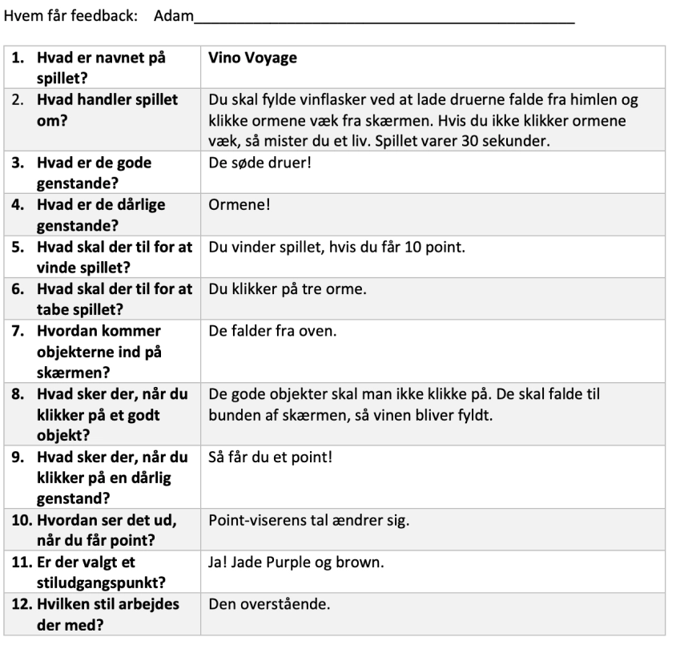
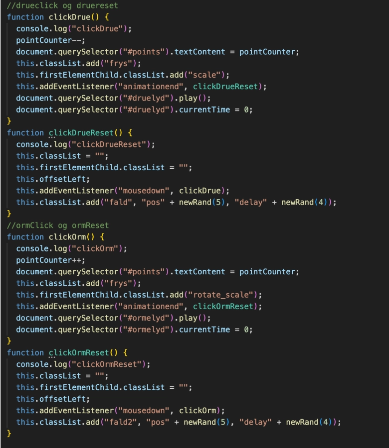
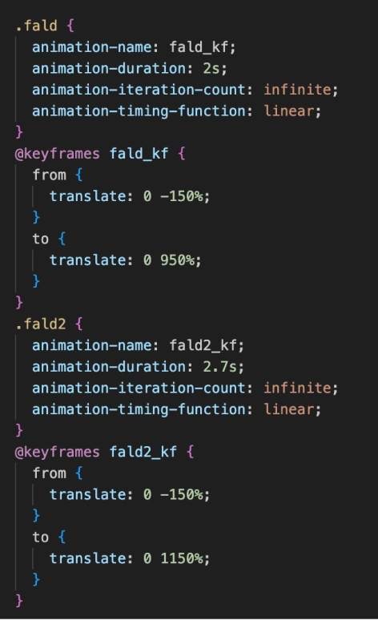

Animation
Temabeskrivelse
I animationstemaet blev vi introduceret til javascript, og forskellige css- animationer. Vi lærte om forskellige tværfaglige principper indenfor planlægning, design og udvikling af digitale brugergrænseoverflader, og udviklingsprocesser. Jeg valgte at benytte metoder indenfor brugerforståelse, frontend-udvikling, og brugeroplevelser til klikspillet. De principper valgte jeg at fokusere på fremfor organisering og produktionsdelen. De samme metoder blev benyttet i grundlæggende UI/UX men her gjorde jeg det på en anden måde. Det bundede ud i følgende design vist på billedet, hvor du kan se den fulde video her.
klikspillet
Til klikspillet havde vi til formål at arbejde med hvordan man engagerede brugerne gennem teori indenfor UI-elementer, figurelementer og baggrundsdesign. Vi lærte om aktivitets- og statemachinediagrammer som jeg brugte til at planlægge spillets interaktive flow. Jeg udarbejdede spillets flow gennem brug af begge former for diagrammer så når f.eks. ormen når ned til bunden mister brugeren et point, og animationen Ormbund starter. Udviklingsprocessen skitse --> Brugerforståelse/test--> kode/javascript er illustreret nederst.
Klikspillet metode
I temaet benyttede jeg testmetoder indenfor skitsering og ideudvikling af mine figurelementer, og UI-elementer. Jeg udførte min skitsering som set på Youtubevideoen og rentegningen af elementer i Adobe illustrator. Assetlisten kan tilgås her hvor de rentegnede elementer kan ses. En af metoderne var peer to peer, som er vist på billedet nedenunder, gav resultaterne af at spillet ideelt set var lige til for brugeren, dog gav det anledning til at ændre både i spillets længe og hastighed i selve css-animationen, da det bidrog til brugerens engagement.
Peer to peer
Feedbacklisten fra vores peer to peer review, hvor man derefter kunne foretage ændringer til klikspillet. Feedbacken var dog positiv ift. spillets flow og brugeroplevelsen.
Klik på elementerne
Her ses begge klikbare gode og onde sprite, der hver i sær får deres classes når man klikker på dem, og deres reset når man har klikket på dem samt pointtælleren går enten op eller ned.
CSS animation & position
Dette er begge sprites faldanimationer, hvor placeringen er angivet i keyframes’ hvor de starter udenfor framen og falder ned med hver deres animation.